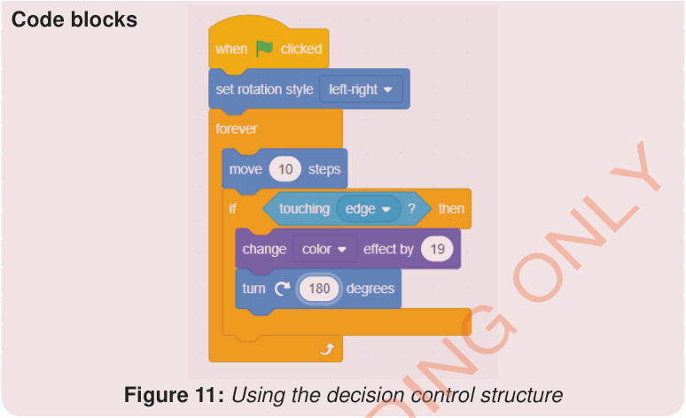

Code blocks

Exercise 4
Activity 9: Creating a number game
Create a numbers game used in learning number patterns in a fun way through mathematics games and puzzles.
Steps
-
1.
From the Events block, choose the when green flag clicked block.